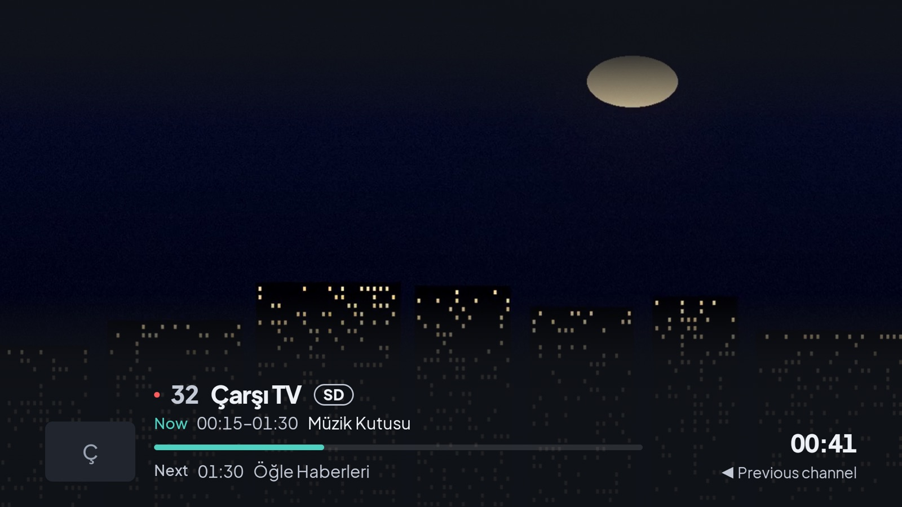
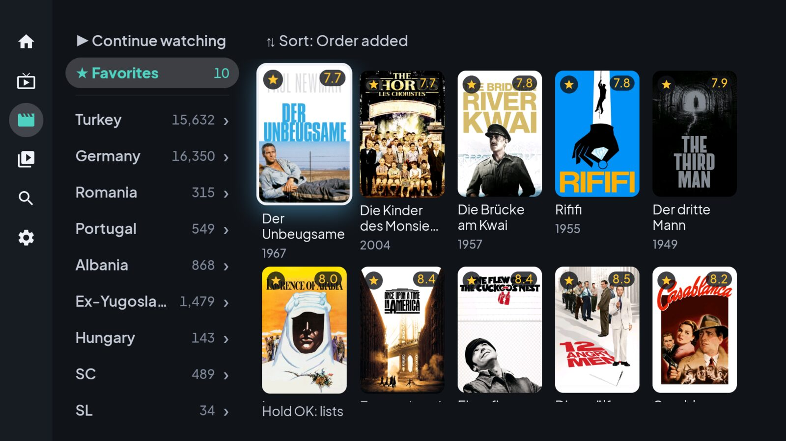

Canlı TV
Kanalı hızlı bul
Solda ülkeyi ve kategoriyi seç. Kanal listesini, canlı önizlemeyi ve şimdi ile sonra yayınlanan programı gör. Program rehberi (EPG) uygulamanın içinde.

Android TV ve Google TV için IPTV oynatıcı
Canlı TV
Solda ülkeyi ve kategoriyi seç. Kanal listesini, canlı önizlemeyi ve şimdi ile sonra yayınlanan programı gör. Program rehberi (EPG) uygulamanın içinde.
Oynatıcı
Yukarı ve Aşağı ile kanal değiştir. Sol tuşu önceki kanala döner. Bilgi şeridi programı ve saati gösterir. Hızlı menüde ses, altyazı, görüntü ve harici oynatıcı var. Kopan yayın kendini yeniden bağlar.

Filmler
Filmlere ülke ve kategoriye göre göz at. Favorilerini ve kendi listelerini tut. İzlemeye devam et bir adım uzakta.

Film sayfası
Ayrıntı sayfası özeti, türü, süreyi ve puanı gösterir. Kayıtlı konumdan sürdürmek için Devam et’e bas ya da baştan başla.

Diziler
Bir dizi aç, sezonu ve bölümü seç. Bölüm bitince geri sayım sonraki bölümü başlatır.

Uygulama son ekranda, sekmede, kategoride ve kanalda açılır. Film ve diziler kayıtlı konumdan devam eder.
"TRT 1 HD / FHD / FHD RAW" tek satır olur. Kalite sırasını sen seçersin.
Şimdi ve sonra ne yayınlandığını program ayrıntılarıyla gör.
TV kumandası için yapıldı. Büyük yazı, net odak, dokunmatik gerekmez.
Açılmayan kanal işaretlenir ve 24 saat gizlenir.
Favori işaretle ve kanal, film, dizi için kendi listelerini tut.
Birkaç harf yaz, film, dizi ve kanal sonuçlarını gör.